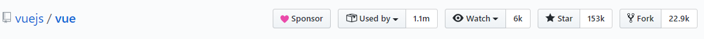
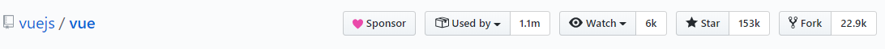

What is React.js?
- React is a JavaScript library for building user interfaces.
- Renders your UI and responds to events
- It also uses the concept called Virtual DOM, creates an in-memory data structure cache, enumerates the resulting differences, and then updates the browser’s displayed DOM efficiently.
- One of the unique features of React.js is not only it can perform on the client side, but it can also be rendered on the server side, and they can work together interoperably
Why was React developed?
- Complexity of two-way data binding.
- Bad UX from using "cascading updates" of DOM tree
- A lot of data on a page changing over time
- Complexity of Facebook's UI architecture
react is maintained by

GitHub stats
 

Who is using React?
Most Popular Websites world wide made with react
Why should You use React?
- Easy to read and understand views
- Concept of components is the future of web development
- If your page uses a lot of fast updating data or real time data - React is the way to go
- Once you and your team is over the React's learning curve, developing your app will become a lot faster
React: the good
Easy to understand what a component will render
- Declarative code → predictable code
- You don't really need to study JS in the view file in order to understand what the file does
Easy to mix HTML and JS
- You do it already with template libraries (e.g. Handlebars, Mustache, Underscore etc.)
No complex two-way data flow
- Uses simple one-way reactive data flow
- Easier to understand than two-way binding
- Uses less code
React is fast!
- Real DOM is slow
- JavaScript is fast
- Using virtual DOM objects enables fast batch updates to real DOM, with great productivity gains over frequent cascading updates of DOM tree
Try React